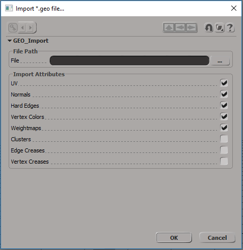
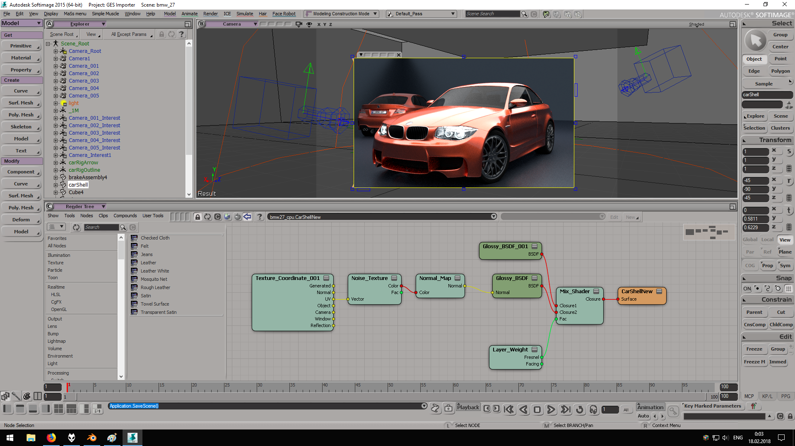

GES import/export
Last update: 24.03.2020
Description: This tool is developed for transferring scenes from Softimage to Blender and back. Current version can only transfers a scene from Blender to universal format *.ges and import it into Softimage. You can transfer from Blender any static geometry and Cycles materials. Of course you need Sycles for Softimage to be able to use these shaders. Animations, instances, particles, hairs are not supported. Materials exported to *.gem files. Each *.gem file can contains many materials combined to the library. Primary the current version of the tool can be used for porting shaders from Blender to Softimage. Addon for Softimage works with any version of *.ges files, but addon for Blender works correctly only with Blender 2.83.
Download:
What are *.ges, *.geo and *.gem formats
*.ges format store hierarchical information about scene in xml-format. It contains data about geometry objects, lights, cameras and render settings. Each gemometry object associates with geo-file (which store actual geometry data) and gem-file (which store shader).
*.geo format is a binary format developed for storing polygon mesh attributes. This format is based on Mesh Data Serialized Format.
*.gem format store shader library in xml-type file. This format is based on General Node Tree Description.
How to use: Install addon for Blender by choosing Install Add-on from File in Blender User Preferences and then select io_scene_ges.zip file. Addon for Softimage install as usual. How to use addon for Blender described in the GitHub page.
Softimage addon adds two menus: with command for export *.geo files and with commands for import *.ges, *.geo and *.gem files.
Export *.geo menu.
Import *.geo menu. In the Import Attributes section you can set what kind of mesh properties should be added to the imported mesh. Of course, if the file does not contains data with selected attribute, then it will be ignored.
Import *.gem menu. In the modal window you can set the mode for materials import. If you select Create new library, then all new materials will be imported to new library with the same name as defines in *.gem file. Also you can select Use existing library. In this case materials will be imported to the library, which is selected in the Existing libraries parameter. Click OK to import materials from gem-file.
Import *.ges menu. If Import Materials is checked off, then no shaders will be added and assigned to imported objects.
Examples (click for the large image):
By using this addons we export some basic example scenes from Blender and import it into Softimage. Nothing tweaked by hand. We simply click export from Blender and then import corresponding *.ges file into Softimage. Then select the camera view and change the render engine to Cycles.
| Blender | Softimage |
|  | |